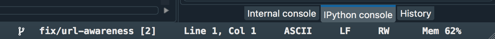
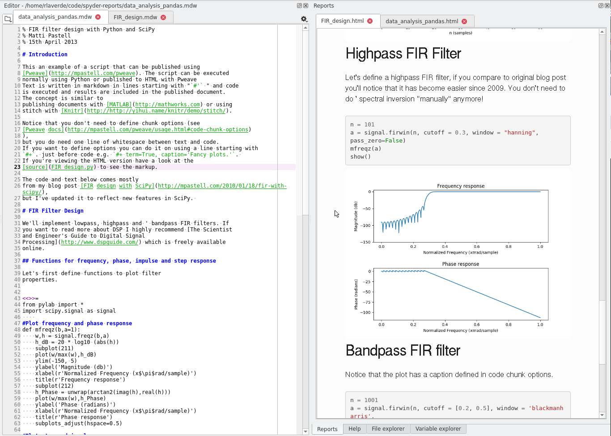

TDK-Micronas partners with Quansight to sponsor Spyder
TDK-Micronas is sponsoring Spyder development efforts through Quansight Labs. This will enable the development of some features that have been requested by our users, as well as new features that will help TDK develop custom Spyder plugins in order to complement their Automatic Test Equipment (ATE’s) in the development of their Application Specific Integrated Circuits (ASIC’s).
At this point it may be useful to clarify the relationship the role of Quansight Labs in Spyder's development and the relationship with TDK. To quote Ralf Gommers (director of Quansight Labs):
"We're an R&D lab for open source development of core technologies around data science and scientific computing in Python. And focused on growing communities around those technologies. That's how I see it for Spyder as well: Quansight Labs enables developers to be employed to work on Spyder, and helps with connecting them to developers of other projects in similar situations. Labs should be an enabler to let the Spyder project, its community and individual developers grow. And Labs provides mechanisms to attract and coordinate funding. Of course the project is still independent. If there are other funding sources, e.g. donations from individuals to Spyder via OpenCollective, all the better."
Multiple Projects aka Workspaces
In its current state Spyder can only handle one active project at a time. Although in the past we had basic support for workspaces, it was never a fully functional feature, so to ease development and simplify the user experience, we decided to remove it in the 3.x series.
For TDK-Micronas, as well as for a large part of the Spyder user base, the use of multiple simultaneous projects is a common pattern, so this enhancement will:
- Move from a single to a multiple active projects concept
- Change the name
Project ExplorertoWorkSpace Explorer. - Copying from one project to another is done in the 'Explorer' by means of context menus.
It is worth mentioning that projects are considered an “advanced feature”, so it will not be forced on users that just want to get some work done. Projects usage is, and will remain, an optional feature.
Project Types
Since the revamp of Spyder Projects with the 3.x series, the new dialog hinted at the possibility of creating different types of projects. Currently Spyder provides an "empty project" project type.
This feature will:
- Expand the (current) Project Explorer API to handle Project Types.
- Define and implement the minimal aspects that should be extensible by a Project Type
File Associations
Spyder currently supports opening files on the Project and File Explorer using the (default) Operating System defined applications. We will enhance this by adding Global file associations as part of the Preferences and Project Specific associations as part of the Project Preferences. This will give users more power to select the tool or set of tools that they prefer to use for specific projects and tasks directly on the File and Project Explorer pane.
URL Awareness
Working with projects requires access to documentation, located within the computer as other files or links located over the internet. We will now include integration for URI detection within the editor so users can Ctrl+Click on these items. This will work similarly as module inspection works, but generalized to external and internal links.
Git version control enhancements
The revision system of choice by our user base, including TDK, is Git. The purpose of this enhancement is to enable basic Git integration from within the File and Project Explorer and to extend the current plugin API so context menus can be customized with specific Git features and commands.
Initial work has already started to display Git relevant information on the status bar

Git status is now displayed in the status bar (on the left)
Editor alternative views
There are many circumstances where a user would like to edit a file that might be rendered using a parsing tool into another type of view. One example of this is Markdown, the markup language in which this blog post is written and that can be rendered to HTML. At the moment the only way to achieve this within Spyder is via the use of a dedicated plugin that would create a new type of Pane. An example of such a plugin is spyder-reports (See image below and the Reports pane). The reason why plugins are developed this way is because the Editor Plugin on Spyder can only contain Code Editor widgets, which prevents us and other developers to use the Editor to hold these alternate views of a given file.

The new alternative views feature will remove this limitation and enable the inclusion of generic widgets (views) of different types of files and provide an API for plugin extensions.
Closing Remarks
I would like to thank TDK-Micronas and Quansight for the opportunity to work in open source development on an awesome product such as Spyder.
I would also like to thank the users, contributors and core developers for helping make Spyder an awesome tool!